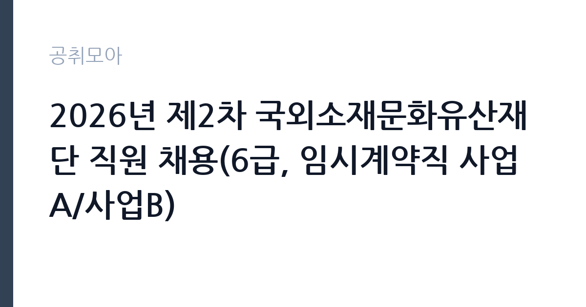

[공공기관] 2026년 제2차 국외소재문화유산재단 직원 채용(6급, 임시계약직 사업A/사업B)
국외소재문화유산재단 · 서울 · 마감 2026-11-09 (D-11) · 출처 나라일터

한눈에 보는 모집 조건
| 기관 | 국외소재문화유산재단 |
|---|---|
| 공고명 | 2026년 제2차 국외소재문화유산재단 직원 채용(6급, 임시계약직 사업A/사업B) |
| 고용형태 | 기간제 |
| 근무지 | 서울 |
| 게시일 | 2026-10-29 |
| 마감일 | 2026-11-09 (D-11) |
지원자격, 이렇게 읽으세요
- 6급(사업) 3명 임시계약직(사업A) 3명 임시계약직(사업B) 2명
- 접수 ~2026-11-09 마감
- 세부 조건은 원문 공고문 확인
기간제 근로자는 근로계약 기간이 정해진 신분입니다. 계약 기간과 갱신 가능 여부가 근로계약서에 명시되며 기간 만료 시 근로관계가 종료됩니다. 결원 보충이나 특정 사업 기간에 맞춰 채용되는 경우가 많아 업무 범위가 명확합니다. 이번 공고는 국외소재문화유산재단에서 직접 진행하는 자체 전형으로, 응시자격과 제출서류는 공고문에 항목별로 제시됩니다. 국외 문화유산 업무는 관련 학위나 해당 분야 경력을 요구합니다. 미술사·고고학·역사학 등 관련 전공과 조사·연구 경력을 확인하고, 외국어 능력을 우대하는 경우가 있습니다. 6급 정규직과 임시계약직이 함께 모집되면 신분과 계약 기간이 다르므로 본인이 지원할 직급을 먼저 확정해야 합니다. 연구 실적은 목록으로 제출해야 인정됩니다. 서류는 접수 마감 이후 보완이 되지 않으므로 자격 요건과 증빙 서류를 마감 전에 모두 갖춰야 합니다. 공고문에 명시된 우대 사항은 해당 여부를 확인해 증빙을 첨부해야 가점이 반영됩니다. 공고문의 응시자격 표를 보면 자격 항목이 여러 줄로 나뉘어 있으므로, 각 줄을 하나씩 체크하며 본인 해당 여부를 표시해 두면 누락을 줄일 수 있습니다.
이 공고의 포인트
이 공고의 첫 번째 포인트는 고용 형태입니다. 계약 기간이 정해져 있어 근무 종료 시점이 명확합니다. 그만큼 짧은 기간에 어떤 실적을 남길지가 중요해집니다. 두 번째는 업무 범위가 명확하다는 점입니다. 국외 문화유산 조사·연구 직무로 채용되므로 배치 이후 담당 업무가 크게 흔들리지 않습니다. 세 번째는 근무지입니다. 서울 지역 근무로 접근성은 좋지만 그만큼 지원자가 몰리는 지역이므로 경쟁률을 넉넉히 잡아야 합니다. 모집 인원이 적은 만큼 지원자 한 명 한 명의 서류 완성도가 당락에 크게 작용합니다. 다만 선발 인원이 3명으로 많지 않아 자격을 갖춘 지원자가 몰리면 경쟁률이 높아질 수 있습니다.
전형은 어떻게 진행되나
전형은 서류심사와 면접심사를 기본으로 하고 직무에 따라 필기나 실기, 체력검정이 추가됩니다. 서류 단계에서는 응시자격 충족 여부와 제출서류 형식을 확인하며 이 단계에서 탈락하는 지원자가 적지 않습니다. 면접은 직무 이해도와 경험을 확인하는 방식으로 진행되고 발표는 개별 통보나 홈페이지 게시로 이뤄집니다. 최종합격 이후에는 결격사유 조회와 채용 신체검사가 이어지며 이 절차에서 문제가 확인되면 합격이 취소될 수 있습니다. 구체적인 전형 단계와 배점은 공고문에 표로 정리되어 있으니 원문을 기준으로 준비하십시오. 전형 일정이 공고문에 날짜로 명시되어 있으니 달력에 옮겨 두고 준비하십시오.
원문에서 확인한 전형 방식
○ 모집분야 - 6급(사업) / 3명 ‧국외 한국문화유산에 대한 조사․연구, 환수·활용 및 전략·정책 연구 등 국외소재문화유산 관련 제반 사업 - 임시계약직(사업A) / 3명 ‧국외문화유산 조사·연구 및 정보관리, 대국민서비스 관련 업무 지원 ‧국외 한국문화유산 반출역사 관련 조사·연구 업무 등 지원 - 임시계약직(사업B) / 2명 ‧국외문화유산 보존 및 활용 업무 지원 ○ 선발직급 : 6급, 임시계약직 ○ 고용형태 : 정규직, 기간제근로자 ○ 자격요건 : 관련 학위 또는 관련 직무분야 경력 ○ 접수기간 : 2026년 11월 3일 ~ 2026년 11월 9일 ○ 응시방법 : 온라인 지원페이지를 통한 접수(https://overseaschf.recruiter.co.kr/) ※온라인 접수 불가 시 등기우편 접수 ○ 문의처 : 02-6902-0712
이런 분께 추천해요
- 관련 전공 학위나 조사·연구 경력이 있는 분
- 외국어로 자료를 다룰 수 있는 분
- 해외 출장과 계약 기간을 수용할 수 있는 분
지원 전 체크리스트
- 응시자격 요건과 경력 기준을 충족하는가 — 경력은 증명서로 입증해야 합니다
- 계약 기간과 근무 시작일·종료일을 확인했는가
- 제출서류 목록을 모두 준비했는가 — 누락 시 서류 단계에서 탈락합니다
- 접수 마감 2026-11-09 이전에 접수 방식을 확인해 제출했는가
모집 일정과 제출 타이밍
접수 마감은 2026-11-09이고 공고는 2026-10-29에 게시되었습니다. 준비 기간 11일 안에 서류 작성, 증빙 발급, 접수를 모두 마쳐야 하므로 주말을 포함해 일정을 미리 나누는 것이 좋습니다. 특히 경력 기술서나 직무수행계획서를 요구하는 공고는 작성에 시간이 걸리므로 첫날 초안을 잡으십시오. 서류 합격자 발표와 면접 사이 간격이 짧은 경우가 많아 면접 예상 질문은 서류 제출 전에 정리해 두는 편이 유리합니다. 마감 직전에는 접속이 몰리므로 여유를 두고 제출하십시오. 임용 예정일이 빠르게 잡히는 공고이므로 현재 일정과 겹치지 않는지 미리 확인하십시오. 서울 근무지는 대중교통 접근성이 좋은 대신 주차와 통근 시간이 변수입니다. 출퇴근 경로를 미리 확인하십시오. 마감까지 2주 안팎이 있어 준비할 시간은 있지만 미루면 촉박해집니다. 선발 인원이 소수라 면접에서 변별력이 크게 작용하는 전형입니다.
직무 이해하기: 공공기관
연구·교육 지원 기관은 정책 연구와 조사 분석, 교육 프로그램 운영을 담당합니다. 과제 기반으로 인력을 채용하는 경우가 많아 계약 기간과 성과 목표가 명확히 정해집니다. 보고서와 연구 성과물의 품질 기준이 높습니다. 국외소재문화유산 업무는 해외에 있는 한국 문화유산의 현황을 조사하고 환수·활용 방안을 연구하는 일입니다. 소재지와 소장 기관 정보를 정리해 데이터베이스를 관리하고, 반출 역사와 유통 경로를 조사합니다. 전시·교육으로 이어지는 대국민 서비스 자료를 만들고, 국외 기관과의 협력 사업을 지원합니다. 사업 기간이 정해진 계약직이 많아 연차별 성과 목표가 정해지고, 국외 출장이 포함될 수 있습니다. 업무는 혼자 처리하기보다 부서 단위로 나눠 진행되므로 담당 구역과 협업 범위를 입사 초에 확인하는 것이 중요합니다. 업무 매뉴얼과 지침이 문서로 정리되어 있어 절차를 익히면 반복 업무는 빠르게 손에 붙습니다.
자기소개서 작성 팁
지원서는 연구·조사 실적을 사례별로 정리하는 것이 효과적입니다. 참여한 조사·연구 과제와 역할, 결과물을 구체적으로 쓰십시오. 국외 기관과 협업한 경험이나 외국어로 자료를 다룬 경험은 차별화 요소입니다. 사업 기간 동안 추진할 조사 계획을 제시하면 준비도가 드러납니다. 문항별 글자 수 제한을 먼저 확인하고, 각 문항의 첫 문장에 결론을 배치하는 방식이 읽기 쉽습니다. 지원 동기는 기관의 어떤 사업에 기여하겠다는 한 문장으로 시작하고, 이어서 본인의 경험을 근거로 붙이십시오. 감점을 피하려면 다른 기관에 보낼 수 있는 범용 문장을 그대로 쓰지 않는 것이 중요합니다. 기관 이름과 사업명이 문장 안에 자연스럽게 들어가야 준비도가 드러납니다.
면접 준비 포인트
면접에서는 조사 방법론과 자료 해석 능력을 확인합니다. 특정 유물의 반출 경로를 어떻게 추적할지, 국외 기관이 협조하지 않을 때 어떻게 접근할지 묻습니다. 연구 성과를 대중용 콘텐츠로 바꾼 경험이 있다면 구체적으로 답하십시오. 외국어 활용 능력도 확인 대상입니다. 답변은 상황, 판단, 조치의 순서로 정리하면 전달이 분명해집니다. 모르는 질문에는 모른다고 밝히고 확인 방법을 제시하는 편이 억지 답변보다 낫습니다. 마지막에는 근무 의사와 함께 2026-11-09 이후 일정에 언제든 응할 수 있다는 점을 전달하십시오. 답변 시간이 짧게 정해져 있는 경우가 있으므로 핵심 문장을 먼저 말하고 근거를 붙이는 방식이 유리합니다.
급여·근무조건 읽는 법
국외소재문화유산재단의 구체적인 보수 수치는 이 공고 원문의 처우 항목과 보수표에서 확인해야 합니다. 공시 자료로 확인되지 않은 금액은 이 글에서 추정해 제시하지 않습니다. 알리오 2025년 결산 공시 기준 공공기관 전체 일반정규직 1인당 평균보수는 7,376만 9천원, 신입사원 평균초임은 4,031만 6천원입니다(무기계약직 미포함). 국외소재문화유산재단의 6급 정규직은 기관 임금체계를, 임시계약직은 계약 기간과 연봉 총액을 개별로 정하는 방식을 적용받습니다. 같은 공고라도 직급에 따라 보수 구조가 다르므로 본인 직급 기준으로 확인해야 합니다. 구체적 금액은 공고문 처우 항목에서 확인하십시오. 2026년 적용 최저임금은 시급 10,320원, 월 환산 2,156,880원(주 40시간·209시간 기준)입니다. 고용노동부 고시 제2025-47호로 확정된 금액입니다. 공고문에 금액이 제시되지 않은 항목은 원문 보수표나 처우 설명에서 확인해야 하며 확인되지 않은 수치는 쓰지 않는 것이 원칙입니다. 비교할 때는 월 급여뿐 아니라 상여·명절휴가비·복지포인트·초과근무수당까지 포함한 연간 총액으로 계산하십시오. 기간제라면 계약 기간 동안의 총액을, 무기계약이라면 호봉 상승과 정년까지의 누적 소득을 기준으로 판단하는 편이 정확합니다.
자주 묻는 질문
- 선발 인원은 몇 명인가요?
공고문 기준 3명입니다. 직종별로 인원이 나뉘는 경우가 있으니 모집분야 항목을 함께 확인하십시오. - 근무지는 어디인가요?
서울 지역의 국외소재문화유산재단 소속 근무지입니다. 세부 주소와 출퇴근 조건은 원문 공고문에서 확인할 수 있습니다. - 보수는 얼마인가요?
채용 신분(기간제)과 기관 임금 규정에 따라 정해지며 구체적인 금액은 공고문 처우 항목에 제시됩니다. 금액이 공개되지 않은 경우에는 원문의 보수표를 확인하십시오.
함께 보면 좋은 공고
[공공기관] 2026년 (재)한국에너지재단 제2차 기간제 채용 공고(채용 제2026-06호) — 마감 2026-11-13[공공기관] 한국고전번역원 2026년 4분기 제2차 직원 신규 채용 — 마감 2026-11-05[공공기관] 계약직 연구원/행정(전북응급의료지원센터) 채용 재공고 — 마감 2026-11-09출처: 나라일터 공개정보를 바탕으로 공취모아가 정리한 안내글입니다. 모집 조건·일정은 변경될 수 있으니 지원 전 반드시 원문 공고문을 확인하세요. 본 글은 정보 제공용이며 합격을 보장하지 않습니다.